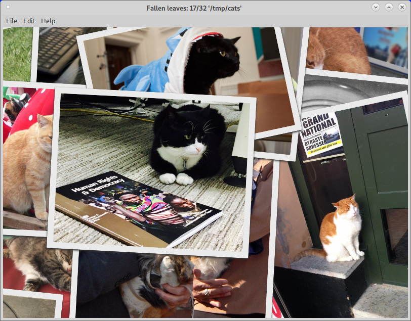

Fallen leaves has several methods to install.
- As a deb package for x86-64 Debian GNU/Linux and derivates (Ubuntu, Linux Mint...). You can install with gdeby or dpkg. Maybe in the future, it will be a PPA or official repository.
- As a snap package for x86-64 GNU/Linux. You can download and install or install from snap store.
The cats of screenshot are from Category:Famous cats (Wikicommons)
-
5,120 Etiam
-
8,192 Magna
-
2,048 Tempus
-
4,096 Aliquam
-
1,024 Nullam
Nam elementum nisl et mi a commodo porttitor. Morbi sit amet nisl eu arcu faucibus hendrerit vel a risus. Nam a orci mi, elementum ac arcu sit amet, fermentum pellentesque et purus. Integer maximus varius lorem, sed convallis diam accumsan sed. Etiam porttitor placerat sapien, sed eleifend a enim pulvinar faucibus semper quis ut arcu. Ut non nisl a mollis est efficitur vestibulum. Integer eget purus nec nulla mattis et accumsan ut magna libero. Morbi auctor iaculis porttitor. Sed ut magna ac risus et hendrerit scelerisque. Praesent eleifend lacus in lectus aliquam porta. Cras eu ornare dui curabitur lacinia.
{kind=link}